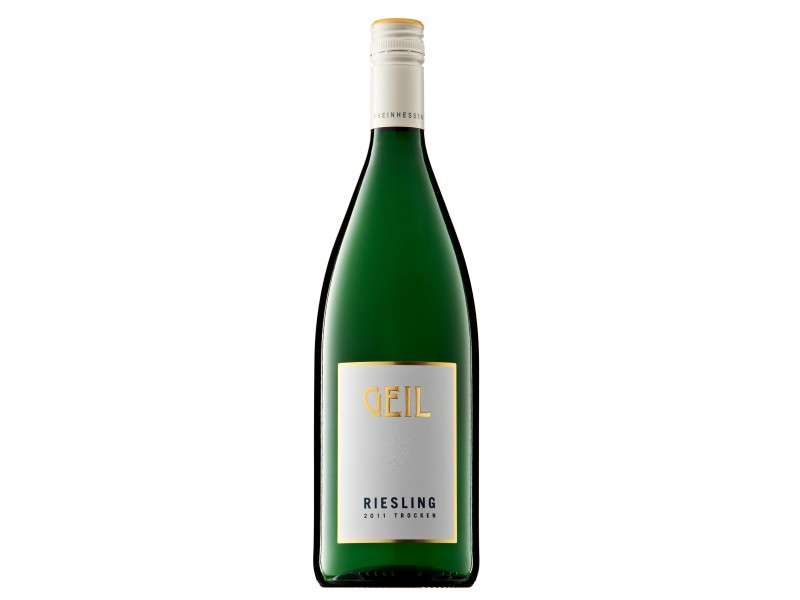
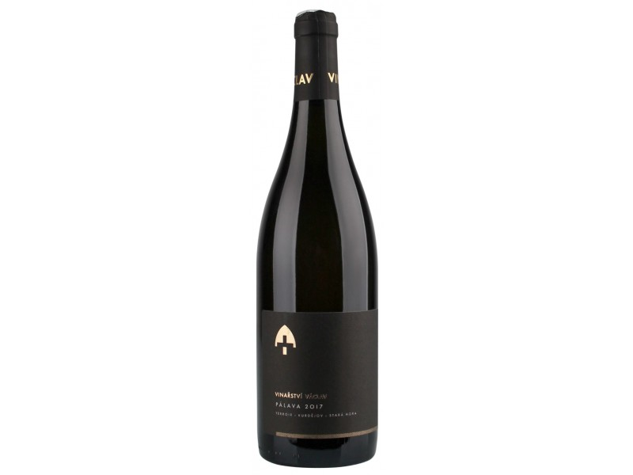

Bílá vína
Třídění produktů
▽Seřadit podle:
Maximální cena:
Barva vína:
Objem:
Země původu:
Cukernatost:
Kategorie vína:
VÝBĚR NEJLEPŠÍCH BÍLÝCH VÍN
Základní surovinou pro výrobu bílého vína jsou hrozny tzv. bílých moštových odrůd révy vinné. Při jeho výrobě se rmut (rozdrcené bobule) ihned lisuje a získává se čistý mošt ke kvašení. Pevné zbytky po lisování se nazývají matoliny. Odrůdy označované jako červené (mají načervenalé bobule – např. Tramín červený) rovněž slouží k výrobě bílých vín. Bílé víno se však dá vyrobit i z modrých odrůd, pokud se zkvasí jen jejich mošt, který u většiny odrůd neobsahuje téměř žádná barviva. Bílé víno vyrobené z modrých hroznů bez nakvášení se může nazývat klaret.

Riesling trocken 2019
210 Kč

Oris 2017
180 Kč

Pálava Terroir 2017/2018
370 Kč
×